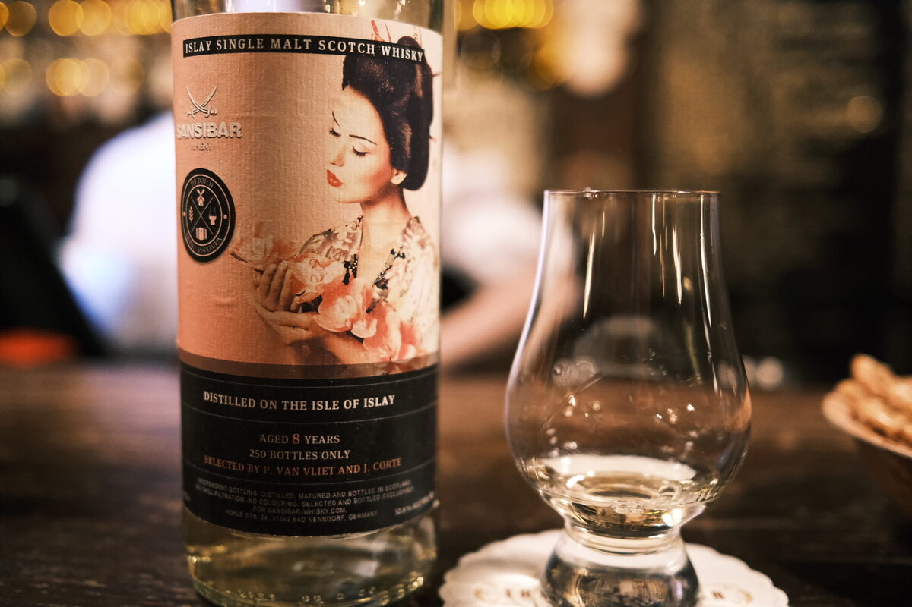

Secret Islay 2008 Sansibar 8 years 52.8% (probably exbourbon)
As usual, suspect Caol Ila. Bottled for the Dutch Whisky Association in 2016. Sansibar have slapped a Geisha on it for some reason.
Colour Straw.
Nose Tropical: bananas, mangoes, chilli. Peat and smoke, lemons and lemon peel oils. Quite herbal, vegetal. A bit of wax? With water, unripe fruits, watermelon rind. Menthol. Mint.
Palate Ash and soot, lemons and limes. Boiled lollies and lemonade. Earthy peat, chocolate. With water, caramel, some melon. A bit herbal. Sweet.
Finish Lemons and citrus oils. Soot, ash, peat. Smoke. Lemon Myrtle chocolates. Long, smoky. With water, a little brighter, fruitier. Biscuits, and a bit of mint… mint slices.
Comments Bright, citrusy, tropical. Peat and smoke, no surprises… conventional, great execution. 89/100.

Posted by Dominic on 15 Jun 2021